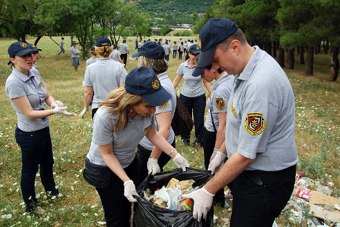

ბუნების დაცვა — გარემოს დაცვის პრაქტიკა, ინდივიდუალურ, ორგანიზაციულ და სამთავრობო დონეზე, ბუნებრივი გარემოს და ადამიანებისთვის საკეთილდღეოდ. ადამიანი უფრო და უფრო მეტ ტერიტორიას ითვისებს, რათა სახლები, ქარხნები და ფერმერები ააშენოს, ამიტომ დანარჩენ ცოცხალ არსებებს უფრო და უფრო ნაკლები საცხოვრებელი ადგილი რჩებათ. კონსერვაცია ღონისძიებათა ერთობლიობაა, რომლის მიზანია იშვიათი ცხოველები და მცენარეები არ გადაშენდნენ, ხოლო ბუნების გავრცელებული სახეობები — არ გაიშვიათდნენ. კონსერვაცია ამ ცხოველთა და მცენარეთა საცხოვრისის შენარჩუნებასაც გულისხმობს.
წინათ ზოგიერთი ცხოველი იმის გამო გადაშენდა, რომ გარემოში მომხდარ ბუნებრივ ცვლილებებს ვერ შეეგუვნენ. დინოზავრები, სავარაუდოდ, ვეებერთელა მეტეორიტის ჩამოვარდნის შედეგად გადაშენდნენ. მეტეორის დედამიწასთან დაჯახებისას წარმოქმნილი მტვრის უზარმაზარი ღრუბელი მთელ ატმოსფეროში გაიშალა, რაც ხელს უშლიდა მზის სხივების შემოღწევას. დაიწყო გამყინვარება, რომელსაც დინოზავრებმა ვერ გაუძლეს.